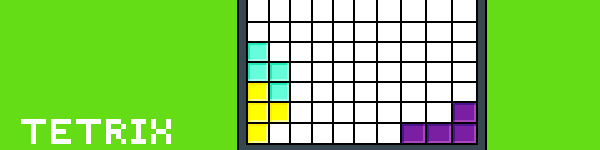

Как да играя?
Floppy bird е игра, в която играчът контролира летящата птица.
Играчът има задачата да навигира птицата през двойки тръби, които
имат еднакво големи пролуки, поставени на произволни височини.
Когато докосне някоя от тръбите, играта свършва.
Tic-tac-toe е игра, в която двама играчи (двама души или човек и робот)
се редуват в избирането квадратче от мрежа (преди играта
да започне играчът има право да избере с коя буква
ще играе-"Х" или "О"), състояща се от девет квадрата. Победителят е първият
играч, който получи три еднакви символа в редица
(вертикално, хоризонтално или по диагонал).

В играта Tetrix играчът мести падащи форми. Преди фигура да достигне
дъното на матрицата, може да я мести и завърти тази форма, за да пасне на
желаната от него позиция. Когато играчът запълни цял ред, той изчезва. Играта
свършвa, когато фигурките достигнат най-горния ред.
В играта Capture the green square играчът има 60 секунди, местейки
червеното квадратче, да "вземе" зеленото, което след всяко взимане,
се появява на нова позиция. След като времето изтече, на екрана се изписва
колко пъти зеленото квадратче е хванато.